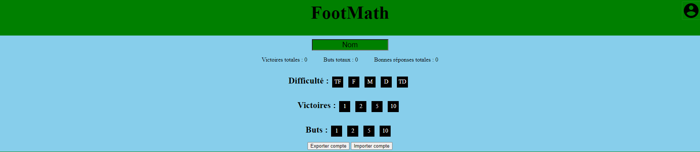

Du haut vers le bas :
La touche visuelle en forme de barre espace disparait lorsqu'elle n'est plus utile.
En cliquant sur l'icone de compte, l'on affiche la zone de compte.
Dans cette zone, une zone de texte où l'on peut rentrer son nom, qui sera sauvegardé. En dessous, des scores sauvegardés lors des parties. En dessous encore, des trophés déblocable sous certaines conditions. Enfin, deux boutons, un pour exporter le compte de l'enfant, l'autre pour l'importer. Un compte est sauvegardé sous forme de fichier en .json
Une partie se déroule tel un match de foot normal. Il y a deux mi-temps, et elles commencent par la balle au centre. Les joueurs se déplacent de case en case (position sur la carte en haut à droite). Pour avancer vers le but ennemie et marquer, il faut répondre correctement à une question de calcul mental. En cas de mauvaise réponse, l'ennemie avance vers les buts alliés. Pour gagner, il faut marquer plus de but que l'adversaire.
Lorsqu'une question est posée, les réponses s'affichent dans les cases en dessous. Pour répondre, il faut soit cliquer sur une case, sois sur une touche fléchée du clavier correspondante.
Si un chronomètre a été sélectionné, il s'affichera au dessus de la question. Si il se termine avant d'avoir répondu, c'est compté comme une mauvaise réponse.
Il est possible de lancer une nouvelle partie au milieu d'une autre.
Si la page venait à se fermer pendant une partoe, il est possible de la reprendre en rouvrant simplement la page.